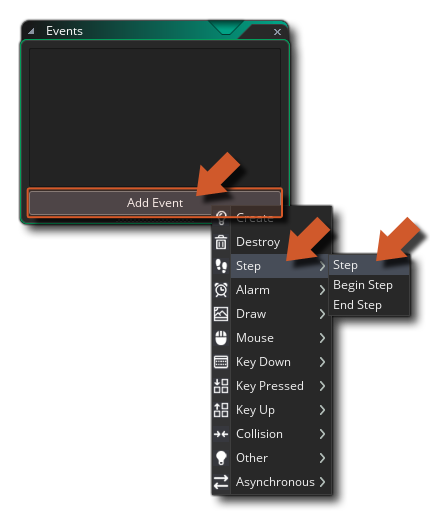
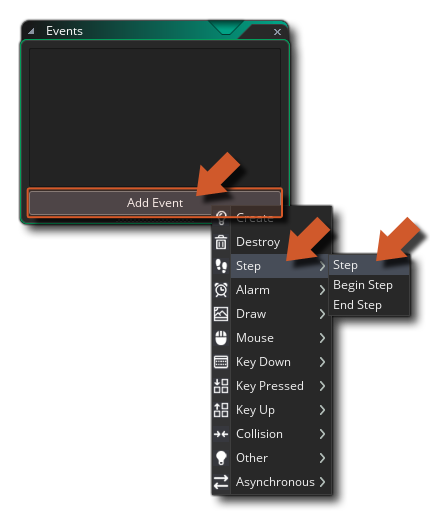
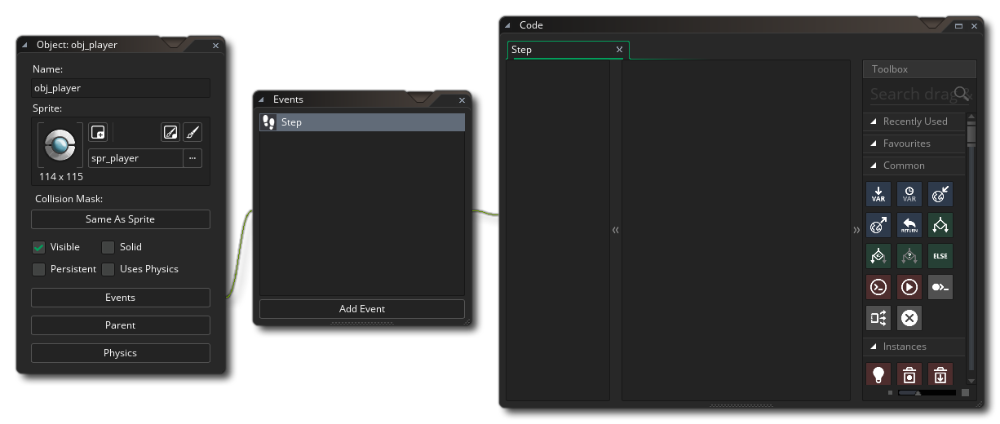
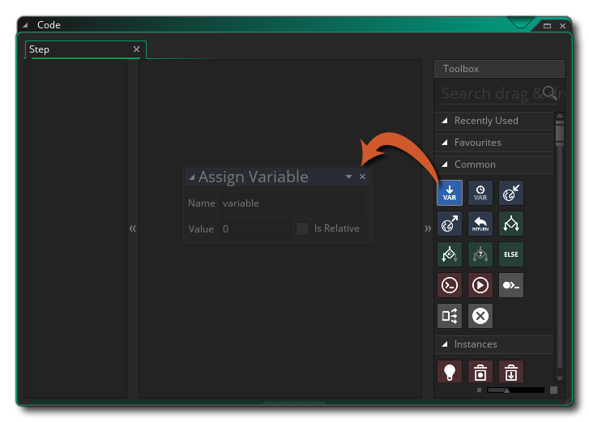
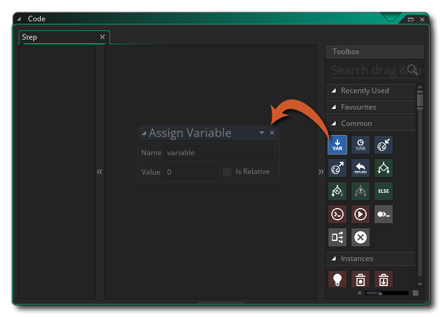
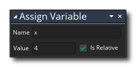
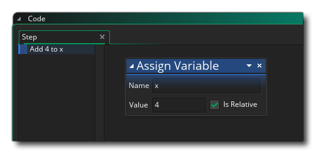
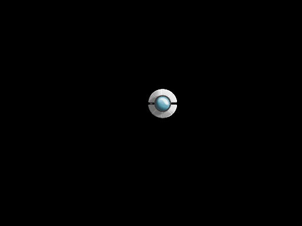

You can close the game window now (if you haven't already) and then double click  on the "obj_player" object in the resource tree. This will take us back to our main workspace and focus it on the object we want to edit.
on the "obj_player" object in the resource tree. This will take us back to our main workspace and focus it on the object we want to edit.
You'll notice that our object has another window chained to it, the Event Editor. A game in GameMaker Studio 2 is simply a selection of code within events that are performed a number of times every second. This is called the "game loop" and a single game loop is called a game frame. The number of game frames in a second is what gives us our Frames per Second (FPS) value for the project. By default this is set to 30, meaning that our game will perform a game frame (loop through all the game code) 30 times every second and in each single frame of the game code you have Events. These events fall into two broad categories:
- Those events that happen every single game loop - like the Step event or the Draw event
- Those events that happen only when a certain criteria has been met - like the Keypress event or the Create event
You can see all the event categories by clicking  on the Add Event button:

on the Add Event button:

In the image above you will see that we have highlighted the "Step" category, and within that the general Step Event, as this is what want to add to our object. If you select it then you'll see the event added into the Event Editor window and a new window chained to it: 
The new window is the DnD™ Editor and is split into three parts:
- On the left we have the action list - this gives a list overview of all the actions in the event
- In the middle we have our action workspace - this is where you drop the actions that you want to perform and edit them
- On the right we have the action toolbox - Here you can find all the Drag and Drop™ action blocks that you can use to create your games
The idea of Drag and Drop™ is simple - you select an action from the toolbox and drag then drop it onto the action workspace. Once in the workspace you edit the parameters that it requires, and then continue to Drag and Drop™ further actions to "chain" them to the previous one. Note that actions are added in a linear fashion, so each subsequent action that you add will be added after the previous. Let's see how that works in practice by adding an action...
As mentioned above, the Step Event is run each and every game loop, so anything we put in here will happen once per game frame (30 times in a second for a 30 FPS game, 60 for a 60fps game, etc...). In this case we are going to add an action to the event to make the player instance move right across the screen. We could use the movement actions for this, but to give you a better idea of how GameMaker Studio 2 does things we are going to set the built in variable "x" to move and use the action Assign Variable  :

:

We want to set the value of "x" to 4 relative to its previous value, so we set the action to look like this:  Note that now in the list view on the left of the editor, we have the action written as plain text: 
So what does this do then? All instances have some built-in variables, of which "x" and "y" are perhaps the most important as they set the position of the instance in the game room. In this case we are telling GameMaker Studio 2 to take the x position value and then add 4 to it. Note that if we hadn't flagged the "relative" check-box, then we would be setting x to 4 rather than adding to it, and if we'd used -4 instead of 4, then we would have been subtracting 4 from x.
If you now run the game again, you'll see the player instance move off to the right:

We now have some movement, but it's not very much fun for anyone... let's now add some new code to the player to make it respond to the user pressing the arrow keys on the keyboard.